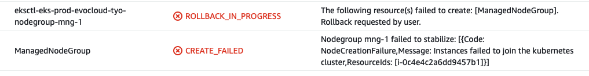

eksctl 创建集群失败了。第一次遇到这个错。
2021-04-25 01:59:24 [ℹ] waiting for CloudFormation stack "eksctl-eks-prod-evocloud-tyo-nodegroup-mng-1"
2021-04-25 01:59:25 [✖] unexpected status "ROLLBACK_IN_PROGRESS" while waiting for CloudFormation stack "eksctl-eks-prod-evocloud-tyo-nodegroup-mng-1"
2021-04-25 01:59:25 [ℹ] fetching stack events in attempt to troubleshoot the root cause of the failure
2021-04-25 01:59:25 [✖] AWS::EKS::Nodegroup/ManagedNodeGroup: CREATE_FAILED – "Nodegroup mng-1 failed to stabilize: [{Code: NodeCreationFailure,Message: Instances failed to join the kubernetes cluster,ResourceIds: [i-09df0fc7408f36801]}]"
2021-04-25 01:59:25 [!] 1 error(s) occurred and cluster hasn't been created properly, you may wish to check CloudFormation console
分析
在 CloudFormation 控制台查看详细日志。无法加入到 K8s 集群。然后没有进一步的信息了。
Nodegroup mng-1 failed to stabilize: [{Code: NodeCreationFailure,Message: Instances failed to join the kubernetes cluster,ResourceIds: [i-0c4e4c2a6dd9457b1]}] 
定位到这份文档。
NodeCreationFailure: Your launched instances are unable to register with your Amazon EKS cluster. Common causes of this failure are insufficient node IAM role permissions or lack of outbound internet access for the nodes. Your nodes must be able to access the internet using a public IP address to function properly. For more information, see VPC IP addressing. Your nodes must also have ports open to the internet. For more information, see Amazon EKS security group considerations.
K8s 的主机是设置为分配在 Private 子网段的，而且数据中心也给配置了 NAT 网关。我的猜测是安全组没开放或是哪边配置出错了。
验证
在 Private 子网段创建了一个实例。
为了访问这个实例，我又在 Public 子网段创建了一个实例。
两个实例都配置了公钥登录的方式。
$ sftp -i test_network_access.pem.txt ubuntu@18.179.136.90
Connected to ubuntu@18.179.136.90.
sftp> put test_network_access.pem.txt
Uploading test_network_access.pem.txt to /home/ubuntu/test_network_access.pem.txt
test_network_access.pem.txt 100% 1704 20.0KB/s 00:00
$ ssh -i test_network_access.pem.txt ubuntu@18.179.136.90
$ ssh -i test_network_access.pem.txt ubuntu@10.105.24.215
$ curl ip.sb
果然是无法访问外网。
后面数据中心同事反馈，NAT 的可用区路由表有点问题。
Last modified on 2021-04-25